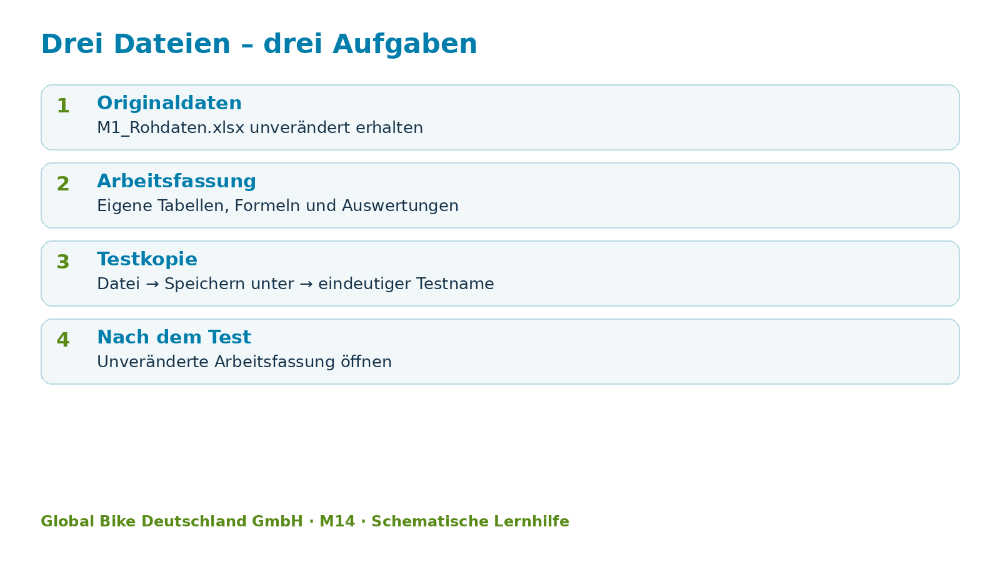

Ü13 – Eine fehlerhafte Excel-Arbeitsmappe überprüfen
Global Bike Deutschland GmbH · Verwaltung · Löppt · freiwillig · unbenotet · keine KI
Ausgangssituation
Emma Fuchs erhält eine fehlerhafte Arbeitsmappe. Vor Weitergabe müssen Daten, Formeln, Diagramm und Ausgabe geprüft werden. Alle Daten sind simulierte Schulungsdaten, keine SAP-Daten oder Hauptfalllösung. Ü12–Ü14 nutzen bewusst dieselbe Kostenbasis für aufeinander aufbauende Qualitätsaufgaben.
Das trainieren Sie
F13; Materialien M3–M14.
Arbeitsdatei
UE13_Arbeitsdatei.xlsx öffnen und Arbeitskopie speichern. Blaue Felder sind Eingaben, grüne Felder vorhandene Formeln. Fehlende Ergebnisse selbst ergänzen.
Arbeitsaufträge
- Speichern Sie eine Testkopie. Sollwerte der Eingaben: Mengen 6,8,5,3; Preise 4,50/7,50/6/4 €. Prüfen Sie Typen und Formate.
- Formeln → Formeln anzeigen. Prüfen Sie jede Zeilenberechnung, Summe, Anteilsbezüge und Restbudget. Korrigieren Sie die Fehler, auch wenn ein Ergebnis zufällig stimmt.
- Prüfen Sie Diagrammentwurf → Daten auswählen: alle vier Kostenarten, keine Summenzeile. Stellen Sie einen geeigneten Druckbereich ein.
- Testen Sie Menge B2=8 (Summe 138 €), Budget B8=100 (Rest −29 € bei ursprünglichen Mengen) und eine neue Zeile in einer Kopie; passen Sie Summen, Nenner und Diagrammquelle an. Stellen Sie Ausgangswerte wieder her.
- Dokumentieren Sie je Fehler Fundstelle, Ursache, Korrektur und Testresultat. Prüfen Sie die gespeicherte Datei erneut.
Hilfen bei Bedarf


Selbstkontrolle
Freiwillige Vertiefung
Eine zusätzliche plausible Eingabe in einer Testkopie verändern, Ergebnis vorhersagen und prüfen. Keine Pflichtabgabe.
Excel-Arbeitsdatei herunterladen